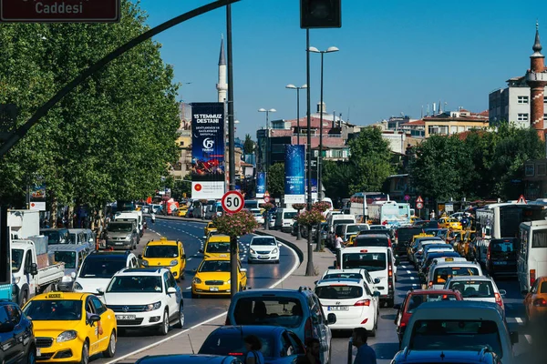

Day 1 - Arrival in Turkey
After a long flight, I finally landed in Istanbul! The moment I stepped off the plane, I was greeted by a city that pulses with life and history...

Acompanhe a jornada inesquecível por paisagens históricas e experiências únicas.
After a long flight, I finally landed in Istanbul! The moment I stepped off the plane, I was greeted by a city that pulses with life and history...
I started my morning walking through the historic streets of Sultanahmet, the heart of old Constantinople. Visiting the Hagia Sophia was simply breathtaking...
I spent hours wandering through its labyrinthine corridors — over 4,000 shops! Bargaining with shopkeepers was a fun challenge...

Today I visited Ephesus, one of the most famous ancient cities in Turkey. Walking through the old stone streets felt like traveling back in time...

From Istanbul to the dreamlike skies of Cappadocia! After a short flight, I arrived in this surreal region filled with volcanic valleys and fairy chimneys...